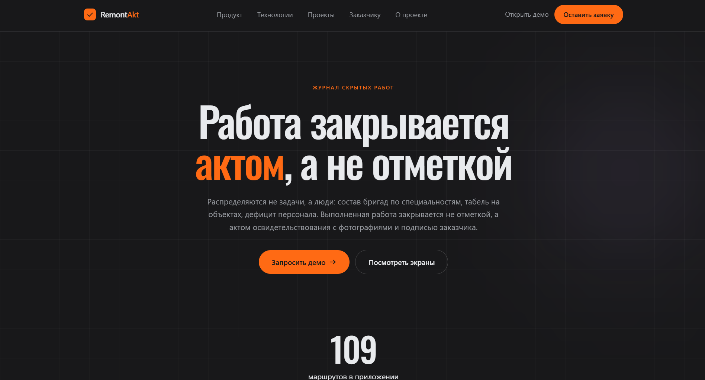

Платформа для компаний и частных мастеров
RemontAkt — платформа для компаний и частных мастеров, позволяющая контролировать выполнение работ: этапы и табель по объектам, оплаты и акты.

Что умеет платформа
- этапы работ и оплаты по каждому объекту;
- табель исполнителей на объекте;
- фотофиксация скрытых работ с хэшем SHA-256;
- акт освидетельствования с подписью Ed25519;
- проверка подлинности акта по номеру — без входа в систему.
Кому подходит
Ремонтным и строительным компаниям, а также частным мастерам, которые ведут несколько объектов сразу и хотят показывать заказчику, что работа выполнена и закрыта документом.
Подробнее о продукте — на странице о проекте. Связаться с командой можно в разделе контакты.